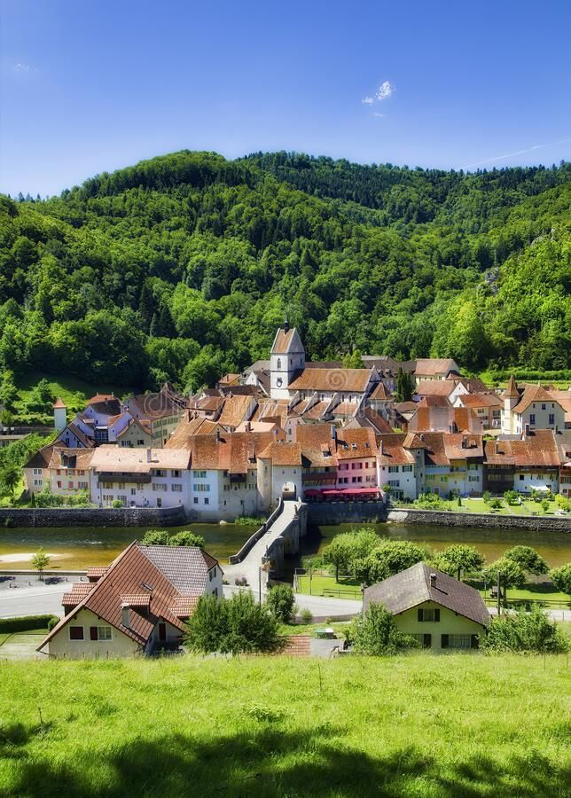
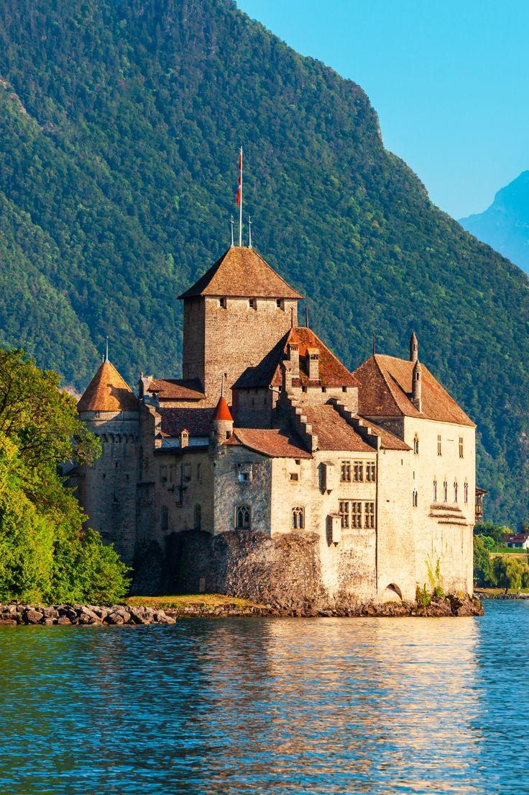

Switzerland is a country with a rich and diverse history, shaped by its geography, culture, and political neutrality. From the formation of the Swiss Confederation to its role as a global peace broker, Switzerland's history is fascinating and complex.
The history of Switzerland dates back to the Roman Empire. The ancient Helvetii people inhabited the region, and after conflicts with Julius Caesar, Switzerland became part of the Roman Empire. Roman rule left significant cultural and architectural legacies that can still be seen today.

During the medieval period, Switzerland was divided into multiple territories controlled by local lords. The Battle of Morgarten in 1315 marked the beginning of the Swiss Confederation, an alliance formed to defend against foreign invaders. Over time, the Confederation grew in strength and became an influential force in Europe.
Switzerland's modern history is characterized by its neutrality during both World Wars, its transformation into a prosperous, democratic nation, and its influence in global diplomacy. Switzerland is home to international organizations like the Red Cross and the UN Office at Geneva, embodying its role as a peacekeeper and humanitarian hub.
